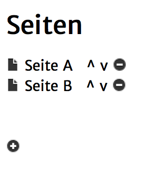
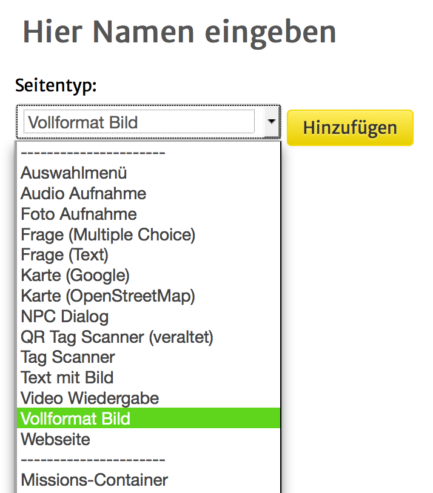
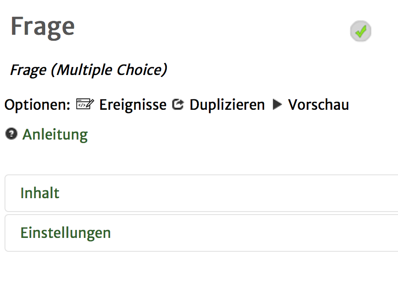
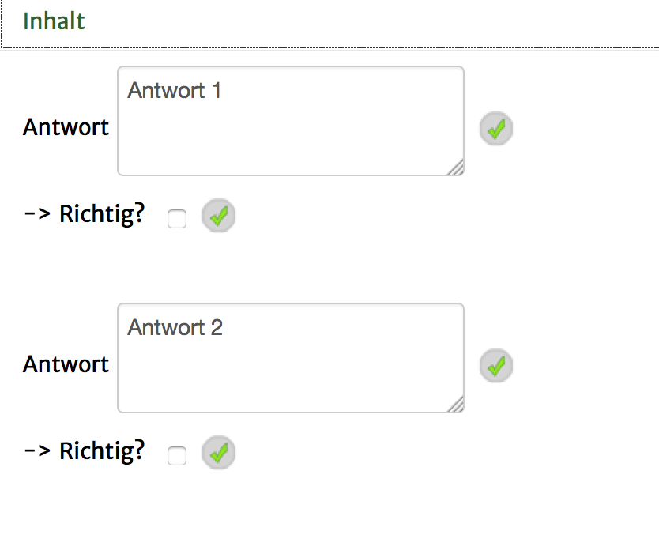
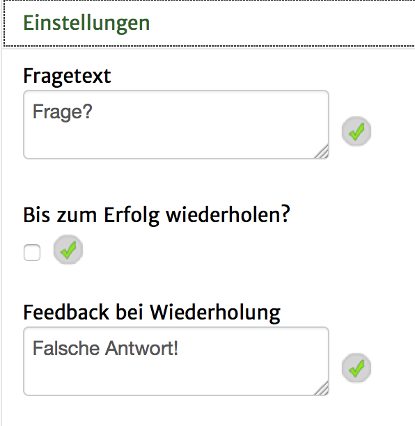

In der Seitenleiste gibt es eine Liste aller erstellsten Seiten in deiner Quest. Sie sollte ungefähr so aussehen:

Mit einem Klick auf den Namen der Seite, kannst du das Seiten-Editier-Fenster öffnen. Mit Hilfe der Pfeile kannst du die Reihenfolge der Seiten verändern. Durch einen Klick auf das Minus-Symbol hinter einer Seite, kannst du die Seite löschen. Mit dem Plus-Button kannst du ein Fenster öffnen, in dem du eine neue Seite erstellen kannst:

In dem nun geöffneten Fenster musst du zunächst einen der verfügbaren Seitentypen auswählen. Auf dieser Seite findest du Beschreibungen zu allen Seitentypen.
Wenn du den gewünschten Seitentypen ausgewählt hast, gib der Seite einen Namen (mit einem Klick auf "Hier Namen eingeben") und klicke dann auf "Hinzufügen".
Wenn du nun in der Seitenleiste auf den Namen der neu erstellten Seite klickst
, öffnest du das Seiten-Editier-Fenster. Dies ist der typische Aufbau eines solchen Fensters:

Ganz oben kannst du mit einem Klick auf den Namen der Seite, dessen Namen editieren.
Unter Optionen kannst du unter "Ereignisse" ein Fenster zum Editieren der Trigger (Aktionen) aufrufen.
Mit "Duplizieren" kannst du die Seite kopieren und mit "Vorschau" kannst du diese Seite auf dem Mobilgeräte-Emulator starten.
Desweiteren können Seiten Inhalte und Einstellungen haben.
Wenn ein Seitentyp Inhalte haben kann, wie hier zum Beispiel die "Multiple-Choice"-Frage beliebig viele Antworten haben kann, so können diese mit einem Klick auf das "+"-Symbol in der unteren rechten Ecke angelegt werden.

Inhalte können direkt im "Inhalte"-Tab verändert werden. Durch einen Klick auf die Bezeichnung des Inhaltes, hier z.B. "Antwort", kann ein Fenster mit weiteren Einstellungsmöglichkeiten geöffnet werden.
Unter Einstellungen können generelle Einstellungen vorgenommen werden. Diese unterscheiden sich von Seitentyp zu Seitentyp.
